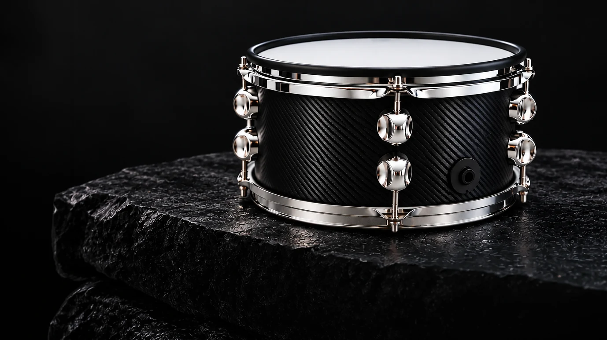
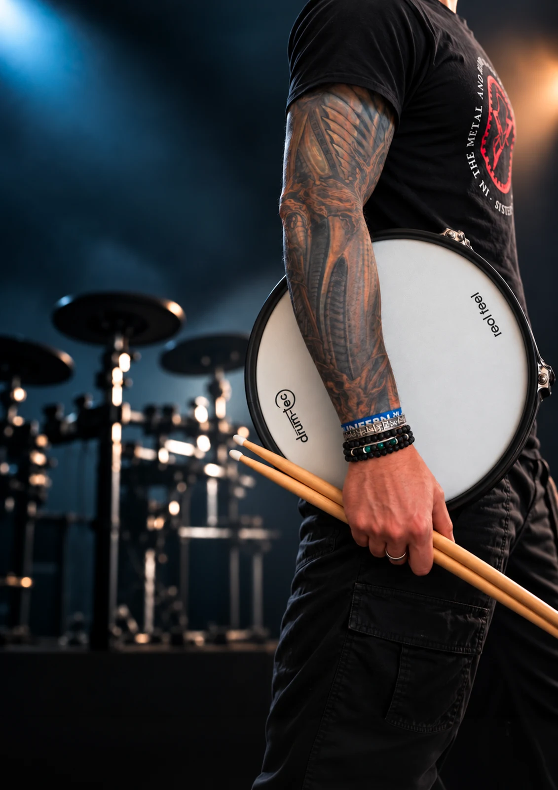
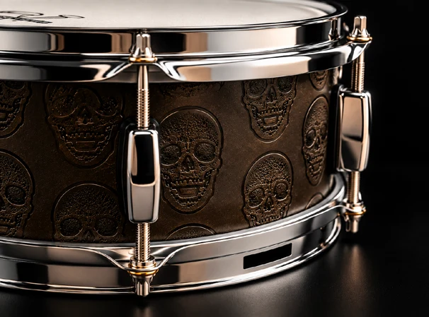
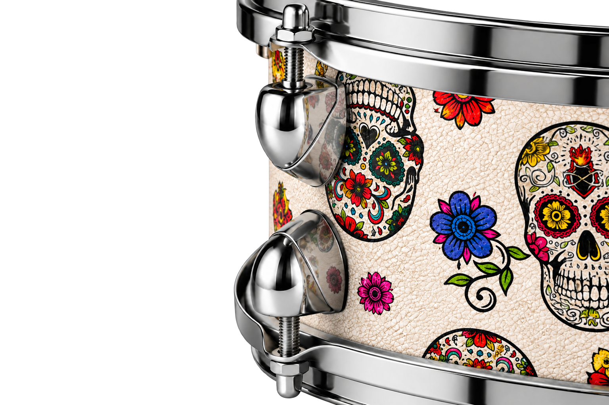
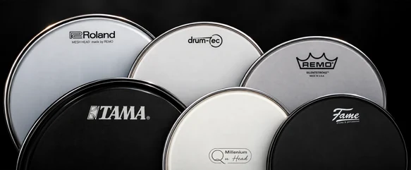
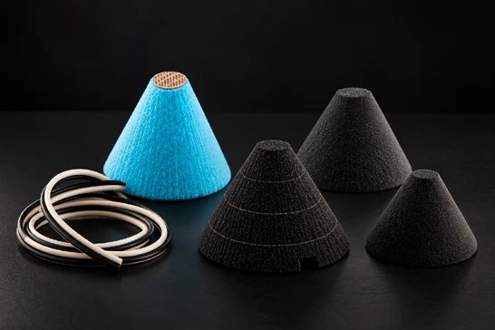
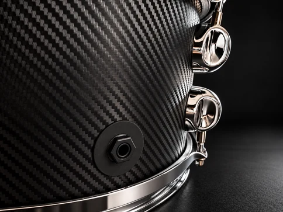
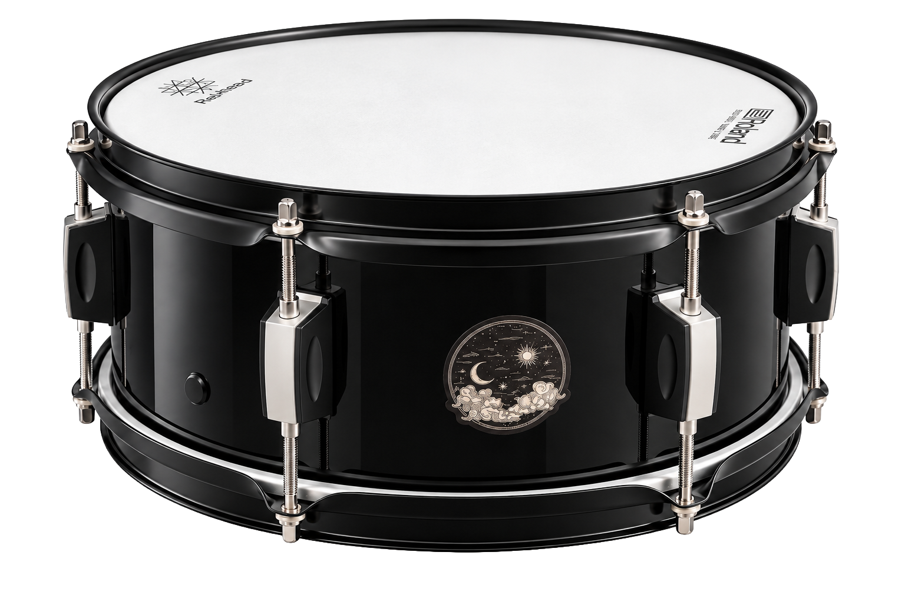

Sur-mesure
Une configuration qui part de vos besoins et de votre budget.
JH E-DRUMS · COLLECTION 2026
Personnalisez votre e-Drums.
Une batterie configurée selon vos besoins,
votre jeu et votre budget.

LE DÉTAIL FAIT LA DIFFÉRENCE.Double cerclage. Votre signature.

POUR LE MUSICIEN DERRIÈRE LE SON.01 — L’ESPRIT JH
Le toucher, la réponse, le style. Chaque choix compte pour créer une e-Drums qui vous ressemble.
Une configuration qui part de vos besoins et de votre budget.
Peaux mesh, capteurs et cônes : des options à choisir selon votre jeu.
Du premier détail à la finition extérieure, donnez votre caractère à l’instrument.
02 — PERSONNALISATION
Composez votre configuration.
Nous en discutons ensemble, élément par élément.

Un détail de construction au cœur de l’esthétique JH.

Simples ou doubles, selon votre configuration.

Plusieurs marques au choix, selon votre budget.
Roland · Drum-tec · Remo · Tama · Millenium · Fame
Cônes Roland, Drum-tec ou autres modèles. Capteurs mono-zone ou bi-zone selon votre jeu.

La connectique de votre e-Drums, intégrée au fût.
Deux possibilités de configuration en fonction du nombre de coquilles sur la caisse claire ou le tom.
Discuter de ma configuration03 — FINITIONS EXTÉRIEURES
Sobre, texturé ou expressif.
Le son vous appartient. Le style aussi.

La finition classique d’origine.
Visuels de la brochure · Exemples de finitions
04 — COMPATIBILITÉ
Les modules compatibles présentés dans notre brochure.
TD-6 / TD-9 / TD-11 / TD-17
Crimson I & II
DTX452K
Vous utilisez un autre module ? Parlons de votre configuration.
05 — VOTRE PROJET COMMENCE ICI
Votre jeu, votre module, vos envies de finition.
Échangeons pour imaginer votre e-Drums.